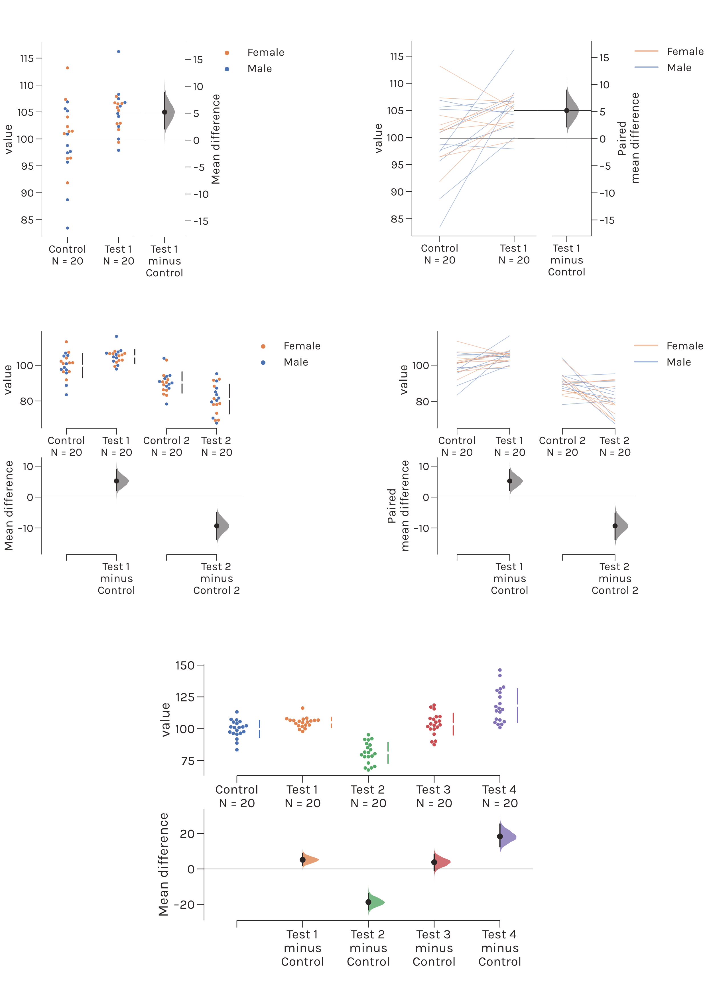
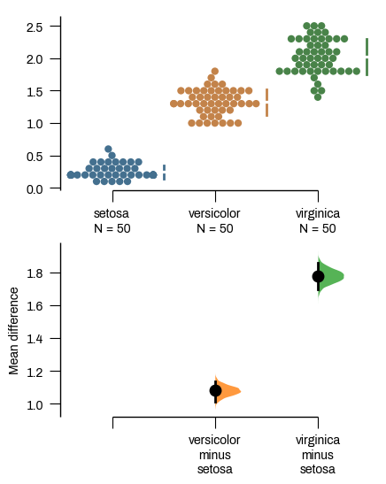

DABEST-Python
Recent Version Update
On 20 March 2023, we officially released DABEST v2023.02.14 for Python. This new version provided the following new features:
Repeated measures. Augments the prior function for plotting (independent) multiple test groups versus a shared control; it can now do the same for repeated-measures experimental designs. Thus, together, these two methods can be used to replace both flavors of the 1-way ANOVA with an estimation analysis.
Proportional data. Generates proportional bar plots, proportional differences, and calculates Cohen’s h. Also enables plotting Sankey diagrams for paired binary data. This is the estimation equivalent to a bar chart with Fischer’s exact test.
The \(\Delta\Delta\) plot. Calculates the delta-delta (\(\Delta\Delta\)) for 2 × 2 experimental designs and plots the four groups with their relevant effect sizes. This design can be used as a replacement for the 2 × 2 ANOVA.
Mini-meta. Calculates and plots a weighted delta (\(\Delta\)) for meta-analysis of experimental replicates. Useful for summarizing data from multiple replicated experiments, for example by different scientists in the same lab, or the same scientist at different times. When the observed values are known (and share a common metric), this makes meta-analysis available as a routinely accessible tool.
Contents
About
DABEST is a package for Data Analysis using Bootstrap-Coupled ESTimation.
Estimation statistics is a simple framework that avoids the pitfalls of significance testing. It uses familiar statistical concepts: means, mean differences, and error bars. More importantly, it focuses on the effect size of one’s experiment/intervention, as opposed to a false dichotomy engendered by P values.
An estimation plot has two key features.
It presents all datapoints as a swarmplot, which orders each point to display the underlying distribution.
It presents the effect size as a bootstrap 95% confidence interval on a separate but aligned axes.

DABEST powers estimationstats.com, allowing everyone access to high-quality estimation plots.
Installation
This package is tested on Python 3.6, 3.7, and 3.8. It is highly recommended to download the Anaconda distribution of Python in order to obtain the dependencies easily.
You can install this package via pip.
To install, at the command line run
pip install --upgrade dabestYou can also clone this repo locally.
Then, navigate to the cloned repo in the command line and run
pip install .Usage
import pandas as pd
import dabest
# Load the iris dataset. Requires internet access.
iris = pd.read_csv("https://github.com/mwaskom/seaborn-data/raw/master/iris.csv")
# Load the above data into `dabest`.
iris_dabest = dabest.load(data=iris, x="species", y="petal_width",
idx=("setosa", "versicolor", "virginica"))
# Produce a Cumming estimation plot.
iris_dabest.mean_diff.plot();
Please refer to the official tutorial for more useful code snippets.
How to cite
Moving beyond P values: Everyday data analysis with estimation plots
Joses Ho, Tayfun Tumkaya, Sameer Aryal, Hyungwon Choi, Adam Claridge-Chang
Nature Methods 2019, 1548-7105. 10.1038/s41592-019-0470-3
Bugs
Please report any bugs on the Github issue tracker.
Contributing
All contributions are welcome; please read the Guidelines for contributing first.
We also have a Code of Conduct to foster an inclusive and productive space.
A wish list for new features
Currently, DABEST offers functions to handle data traditionally analyzed with Student’s paired and unpaired t-tests. It also offers plots for multiplexed versions of these, and the estimation counterpart to a 1-way analysis of variance (ANOVA), the shared-control design. While these five functions execute a large fraction of common biomedical data analyses, there remain three others: 2-way data, time-series group data, and proportional data. We aim to add these new functions to both the R and Python libraries.
In many experiments, four groups are investigate to isolate an interaction, for example: a genotype × drug effect. Here, wild-type and mutant animals are each subjected to drug or sham treatments; the data are traditionally analysed with a 2×2 ANOVA. We have received requests by email, Twitter, and GitHub to implement an estimation counterpart to the 2-way ANOVA. To do this, we will implement \(\Delta\Delta\) plots, in which the difference of means (\(\Delta\)) of two groups is subtracted from a second two-group \(\Delta\). Implemented in v2023.02.14.
Currently, DABEST can analyse multiple paired data in a single plot, and multiple groups with a common, shared control. However, a common design in biomedical science is to follow the same group of subjects over multiple, successive time points. An estimation plot for this would combine elements of the two other designs, and could be used in place of a repeated-measures ANOVA. Implemented in v2023.02.14
We have observed that proportional data are often analyzed in neuroscience and other areas of biomedical research. However, compared to other data types, the charts are frequently impoverished: often, they omit error bars, sample sizes, and even P values—let alone effect sizes. We would like DABEST to feature proportion charts, with error bars and a curve for the distribution of the proportional differences. Implemented in v2023.02.14
We encourage contributions for the above features.
Acknowledgements
We would like to thank alpha testers from the Claridge-Chang lab: Sangyu Xu, Xianyuan Zhang, Farhan Mohammad, Jurga Mituzaitė, and Stanislav Ott.
Testing
To test DABEST, you will need to install pytest.
Run pytest in the root directory of the source distribution. This runs the test suite in the folder dabest/tests. The test suite will ensure that the bootstrapping functions and the plotting functions perform as expected.
DABEST in other languages
DABEST is also available in R (dabestr) and Matlab (DABEST-Matlab).